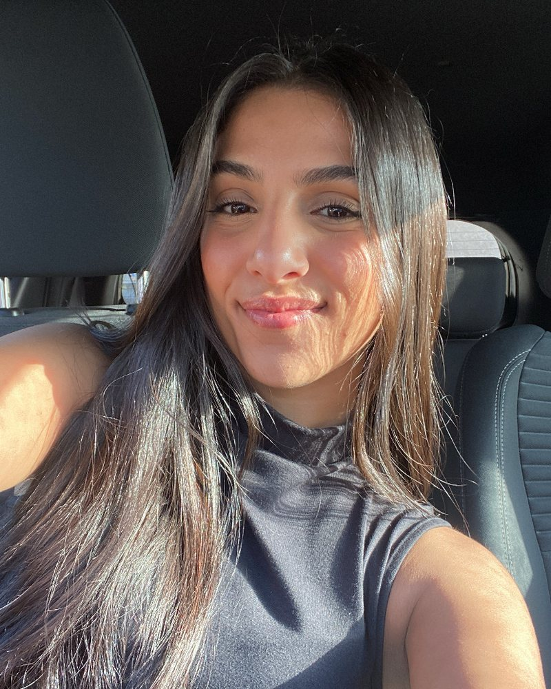
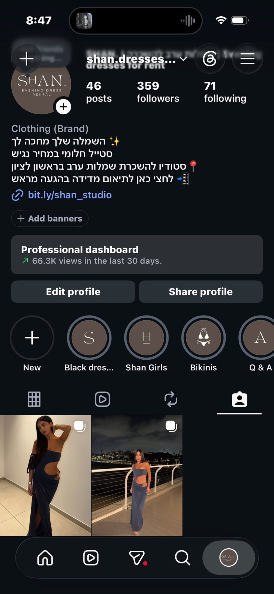
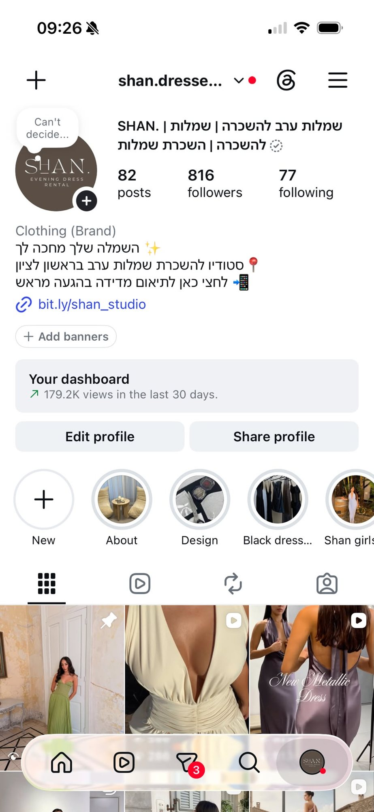

Make your brandunforgettableלהפוך את המותג שלך לבלתי נשכח
אני עוזרת לעסקים להפוך את הנוכחות שלהם ברשת למותג שאנשים עוצרים בשבילו, באמצעות אסטרטגיה מדויקת, תוכן יצירתי ושפה ויזואלית שמרגישה נכונה לעסק. I help businesses turn their online presence into a brand people stop scrolling for, through precise strategy, creative content and a visual language that feels right for the business.
ניהול סושיאל · יצירת תוכן · אסטרטגיהSocial media management · Content creation · Strategy

מי אני?Who am I?
היי, אני גאיה, מנהלת סושיאל ויוצרת תוכן.Hi, I'm Gaya, a social media manager and content creator.
אני עובדת עם עסקים שרוצים שהסושיאל שלהם ירגיש כמו המשך אמיתי של המותג שלהם, ולא פשוט עוד עמוד שמעלה פוסטים.I work with businesses that want their social media to feel like a true extension of their brand, not just another page that posts.
אני משלבת בין אסטרטגיה, קריאייטיב, צילום, עריכה והבנה של מה גורם לאנשים לעצור, להסתכל ולהתחבר, כדי ליצור נוכחות שהיא גם אסתטית וגם עובדת עבור העסק.I combine strategy, creative, shooting, editing and an understanding of what makes people stop, look and connect, to build a presence that is both beautiful and works for the business.
מבחינתי, תוכן טוב לא מתחיל בטרנד.
הוא מתחיל בלהבין מה אנחנו רוצים שאנשים ירגישו כשהם פוגשים את המותג.For me, good content doesn't start with a trend.
It starts with understanding what we want people to feel when they meet the brand.
Our services
A complete social media solution.
מעטפת שלמה שנבנית סביב המותג שלך, מהכיוון הקריאייטיבי ועד לנוכחות היומיומית בסושיאל, כדי שכל מה שיוצא החוצה ירגיש מדויק, אחיד ונכון לעסק.A complete package built around your brand, from creative direction to your everyday social presence, so everything that goes out feels precise, consistent and right for the business.
ניהול הסושיאל מקצה לקצה: בניית אסטרטגיה, גאנט חודשי, העלאת תכנים, כתיבה, קריאייטיב וניהול הנוכחות השוטפת של המותג.End-to-end social management: strategy, a monthly content calendar, publishing, copywriting, creative and the brand's day-to-day presence.
ימי צילום ותוכן שמותאם במיוחד למותג, החל מהקונספט והשוט ליסט ועד לצילום, עריכה והתוצר הסופי.Shoot days and content tailored to the brand, from concept and shot list through shooting, editing and the final piece.
בניית שפה ויזואלית וכיוון קריאייטיבי שמחברים את כל התוכן לעולם אחד ברור ומזוהה.A visual language and creative direction that tie all the content into one clear, recognizable world.
שילוב כלי AI בתוך הקריאייטיב ליצירת ויז'ואלים, קונספטים ותוכן שקשה להתעלם ממנו.AI tools woven into the creative to produce visuals, concepts and content that's hard to ignore.
From idea to feed
How we bring your brand to life
לכל מותג מותאמת אסטרטגיה שונה, לכן התהליך מתחיל הרבה לפני שמצלמים את הריל הראשון.Every brand gets its own strategy, so the process starts long before the first reel is shot.
DISCOVER
מכירה את העסק, הקהל, המטרות והכיוון שאליו אנחנו רוצים לקחת את המותג.Getting to know the business, the audience, the goals and where we want to take the brand.
BUILD
בונה אסטרטגיה, שפה ויזואלית ותוכנית תוכן שמותאמת לעסק.Building a strategy, visual language and content plan tailored to the business.
CREATE
מתכננת ומפיקה את התוכן: צילום, קריאייטיב, עריכה וקופי.Planning and producing the content: shooting, creative, editing and copy.
GROW
מעלים, בודקים מה עובד, לומדים וממשיכים לדייק את התוכן מחודש לחודש.Publishing, checking what works, learning and refining the content month after month.
חבילות ניהול סושיאלSocial media packages
ניהול חודשי מלאFull monthly management
נוכחות מדויקת, תוכן איכותי וניהול שוטף שמתאים לקצב של העסק שלך. את המחיר נעבור יחד בשיחת ההיכרות.A precise presence, quality content and ongoing management at your business's pace. We'll go over pricing together in our intro call.
חבילת בסיסBasic
נוכחות עקבית ומקצועיתA consistent, professional presence- ניהול עמודים: אינסטגרם, פייסבוק, טיקטוקPage management: Instagram, Facebook, TikTok
- אסטרטגיית תוכןContent strategy
- גאנט תוכן כל חודשMonthly content calendar
- עיצוב, עריכת תוכן וקופיDesign, editing and copywriting
- תזמון והעלאת תכניםScheduling and publishing
- 2 תכני Feed בשבוע2 feed posts a week (פוסט, ריל או קרוסלה)(post, reel or carousel)
- 3 פעימות סטורי בשבוע3 story drops a week (5-7 סטורים בפעימה)(5-7 stories each)
- יום צילום אחד בחודש1 shoot day a month (עד 4 שעות)(up to 4 hours)
- ניהול קידום ממומןPaid ads management
- ניתוח נתונים חודשיMonthly analytics
- מעקב טרנדים, מתחרים והזדמנויות תוכןTracking trends, competitors and content opportunities
- ניהול וסידור שוטף של היילייטיםOngoing highlights management
עד 2 סבבי תיקונים לכל פריט תוכןUp to 2 revision rounds per content item
לפרטים על חבילת בסיסAsk about Basicחבילת פרימיוםPremium
יותר תוכן, יותר צילוםMore content, more shooting- ניהול עמודים: אינסטגרם, פייסבוק, טיקטוקPage management: Instagram, Facebook, TikTok
- אסטרטגיית תוכןContent strategy
- גאנט תוכן כל חודשMonthly content calendar
- עיצוב, עריכת תוכן וקופיDesign, editing and copywriting
- תזמון והעלאת תכניםScheduling and publishing
- 3 תכני Feed בשבוע3 feed posts a week (פוסט, ריל או קרוסלה)(post, reel or carousel)
- 4 פעימות סטורי בשבוע4 story drops a week (5-7 סטורים בפעימה)(5-7 stories each)
- 2 ימי צילום בחודש2 shoot days a month (עד 4 שעות כל אחד)(up to 4 hours each)
- ניהול קידום ממומןPaid ads management
- ניתוח נתונים חודשיMonthly analytics
- מעקב טרנדים, מתחרים והזדמנויות תוכןTracking trends, competitors and content opportunities
- ניהול וסידור שוטף של היילייטיםOngoing highlights management
עד 2 סבבי תיקונים לכל פריט תוכןUp to 2 revision rounds per content item
לפרטים על חבילת פרימיוםAsk about Premium* תקציב הפרסום הממומן אינו כלול בחבילות ומשולם בנפרד.* The paid ads budget itself is not included and is paid separately.
תוך שמירה על שפה ויזואלית אחידה, תכנון מראש וקריאייטיב שמרגיש נכון למותג.with a unified visual language, advance planning and creative that feels right for the brand.
ימי צילום ויצירת תוכןShoot days & content creation
צילום שהופך לתוכן לחודשOne shoot, a month of content
אפשר להוסיף צילום חודשי לחבילה, או להזמין סשן חד-פעמי.Add a monthly shoot to your package, or book a one-time session.
סשן צילום קצרShort session
- תכנון קונספטים ושוט ליסט מראשConcepts and shot list planned in advance
- מתאים ליצירת מאגר תוכן ממוקד למותגGreat for a focused content bank
- קבלת חומרי גלם לתוכן החודשיRaw footage for your monthly content
יום צילום מורחבExtended shoot day
- תכנון קריאייטיב וקונספטים לצילוםCreative direction and shoot concepts
- בניית מאגר תוכן רחב לחודשA broad content bank for the month
- קבלת חומרי גלם לתוכן החודשיRaw footage for your monthly content
אלא ליצור מראש חומר מדויק שאפשר להפוך לתוכן מגוון, עקבי ומחובר למותג.it's about creating precise material that becomes varied, consistent, on-brand content.
שירותים נוספיםAdd-on services
תוספות לפי הצורךExtras, as you need them
שירותים שאפשר להוסיף לחבילה או להזמין בנפרד, בהתאם לצרכים של העסק.Services you can add to a package or order separately, based on what your business needs.
סרטון נוסףExtra video
עריכת סרטון מחומרי גלם קיימים, כולל חיתוכים, מוזיקה, טקסט ועריכה בסיסיתEditing from existing footage, including cuts, music, text and basic edit
פוסט או קרוסלה נוספיםExtra post or carousel
תוכן מעבר לכמות שבחבילה, כולל עיצוב וכתיבת קופיContent beyond your package, including design and copy
סטורי בודדSingle story
עיצוב והכנת סטורי מעבר לכמות שבחבילהA designed story beyond your package
חבילת 5 סטורים (פעימה)5-story drop
יצירה ועיצוב של 5 סטורים סביב נושא, מוצר, מבצע או מסר5 designed stories around a topic, product, promotion or message
ניהול משפיעניםInfluencer management
איתור יוצרים מתאימים, יצירת קשר, תיאום שיתוף הפעולה ומעקב אחר התוכן ושיתופוFinding the right creators, outreach, coordination and tracking the content
עיצוב גרפי חד-פעמיOne-off graphic design
מודעת מבצע, הזמנה, פוסטר, באנר או גרפיקה ייעודיתA promo ad, invitation, poster, banner or custom graphic
גאנט תוכן בלבדContent calendar only
תכנון חודשי של התוכן, להפעלה בעצמכםA monthly content plan you run yourself
עבודה דחופהRush work
יצירה או עריכת תוכן בהתראה של עד 48 שעות, לפי זמינותContent created or edited within 48 hours, subject to availability
סבב תיקונים נוסףExtra revision round
מעבר לשני סבבי התיקונים הכלוליםBeyond the 2 included revision rounds
כל השירותים, התוצרים והעלויות מסוכמים מראש, כדי שתהליך העבודה יהיה ברור ומסודר.All services, deliverables and costs are agreed in advance, for a clear process.
עבודותWork
קצת ממה שיצרתיA few things I've made
לחצו על סרטון כדי לצפות עם סאונד 🔊Tap a video to watch with sound 🔊
תוצאותResults
SHAN: לפני ואחריSHAN: before & after
SHAN הוא סטודיו להשכרת שמלות ערב בראשון לציון. ככה נראה עמוד האינסטגרם שלו ביום שהתחלנו לעבוד יחד, ומה השתנה מאז:SHAN is an evening-dress rental studio in Rishon LeZion. Here's its Instagram on the day we started working together, and what changed since:
לצילומי המסך המקורייםView the original screenshots


מה אומרים עלייKind words
בקול של לקוחהIn a client's own voice
"אני סומכת עלייך, אני יודעת שהמותג שלי בידיים טובות. את באה עם המון רצון טוב, באמת אכפת לך, ומנסה לצאת מהקופסה ולעשות משהו מיוחד. אני בטוחה שתצליחי.""I trust you, I know my brand is in good hands. You come with so much goodwill, you truly care, and you try to think outside the box and do something special."לקוחה (הקלטה מקורית)Client (original recording, in Hebrew)
"הסתכלתי על הפיד ואיזה שינוי עבר. זה מתחיל לתת את התפוקה והשינוי שרציתי. הרגשתי שאני לא ממש מתחברת לתוצרים שלי, ועכשיו זה נראה פיד יפה ומתוחזק, בסגנון מאוד אחיד ומושקע, ואני מתחילה לאהוב את מה שקורה.""I looked at the feed and what a change. It's starting to deliver the change I wanted. I didn't really connect with my content before, and now it's a beautiful, well-kept feed, very consistent and polished, and I'm starting to love what's happening."לקוחה (הקלטה מקורית)Client (original recording, in Hebrew)
שאלות נפוצותFAQ
מה שואלים לפני שמתחיליםWhat people ask before we start
תוך כמה זמן רואים תוצאות?How soon will I see results?
סושיאל הוא תהליך שנבנה לאורך זמן. כבר בהתחלה אפשר לראות שינוי בנראות, בסדר ובעקביות של העמוד, אבל צמיחה בחשיפה, במעורבות ובפניות תלויה בגורמים נוספים ודורשת זמן והתמדה. לרוב זה לוקח לפחות שלושה חודשים.Social media is built over time. Early on you'll see a change in how your page looks, its order and consistency, but growth in reach, engagement and leads depends on more factors and takes time and persistence. It usually takes at least three months.
מה מבדיל אותך ממנהלות סושיאל אחרות?What makes you different?
אני לא מאמינה ביצירת תוכן רק בשביל להעלות משהו לעמוד. אני באמת מתייחסת לכל עסק שאני עובדת איתו כאילו הוא העסק שלי, וחשוב לי להבין מה עומד מאחוריו ולשלב בין יצירתיות, אסתטיקה וחשיבה אסטרטגית בכל תוכן שאני יוצרת.I don't believe in creating content just to post something. I treat every business I work with as my own, and I make sure to understand what stands behind it and combine creativity, aesthetics and strategy in everything I create.
האם אני צריך להיות מעורב בתהליך?Do I need to be involved?
כן, בעיקר בהתחלה, כדי שאוכל להכיר את העסק כמו שצריך. בהמשך אני דואגת לתכנון וליצירת התוכן, תוך שמירה על תקשורת ושיתוף פעולה כדי לוודא שאנחנו בכיוון הנכון.Yes, mainly at the start, so I can get to know your business properly. After that I handle planning and creation, while keeping in touch to make sure we're heading the right way.
השלב הבאNext step
בואו נכירLet's meet
שיחת היכרות ואסטרטגיה קצרה: נבין מה העסק צריך ואיך הופכים את הנוכחות שלו ברשת למותג. כתבו לי בוואטסאפ או התקשרו.A short intro and strategy call: we'll see what your business needs and how to turn its online presence into a brand. Message me on WhatsApp or call.